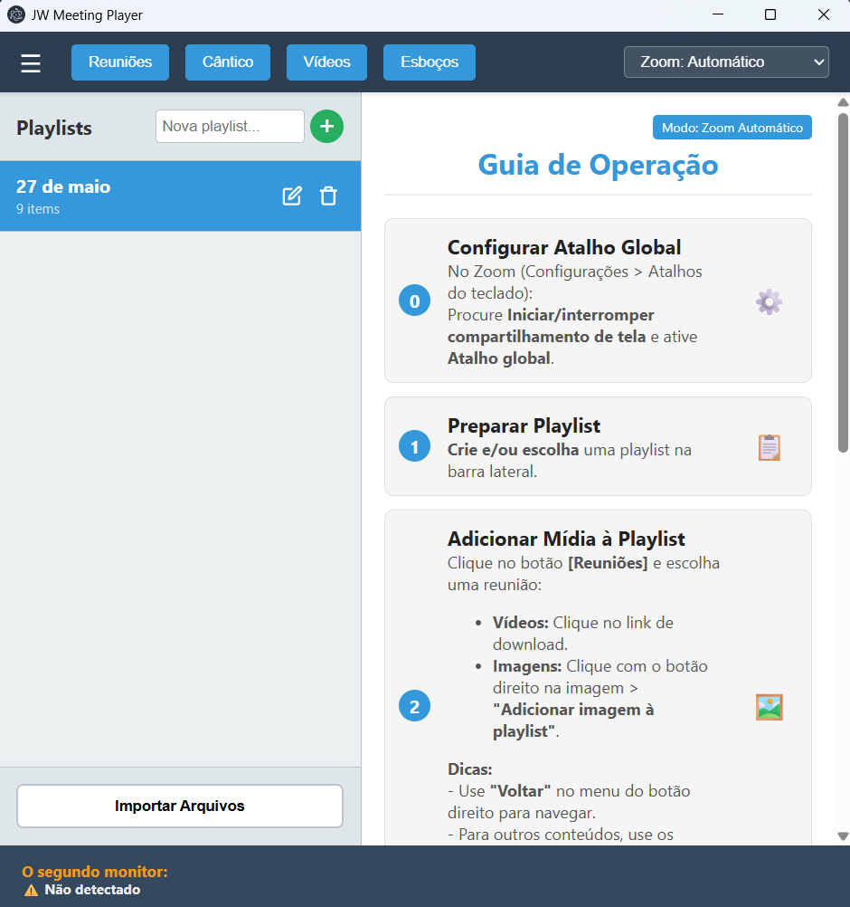
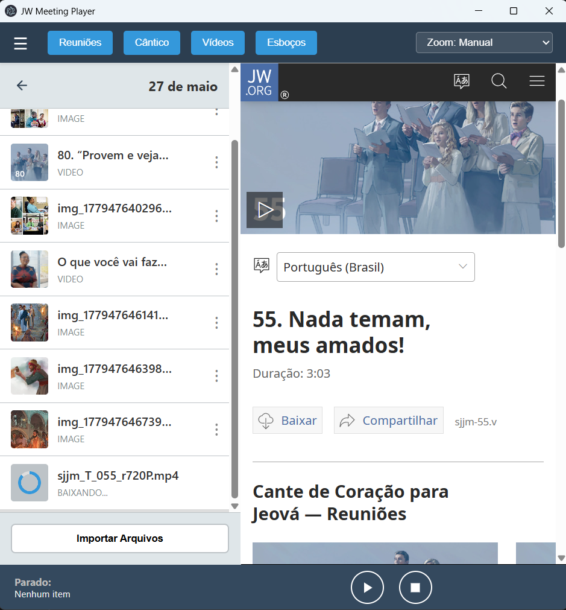
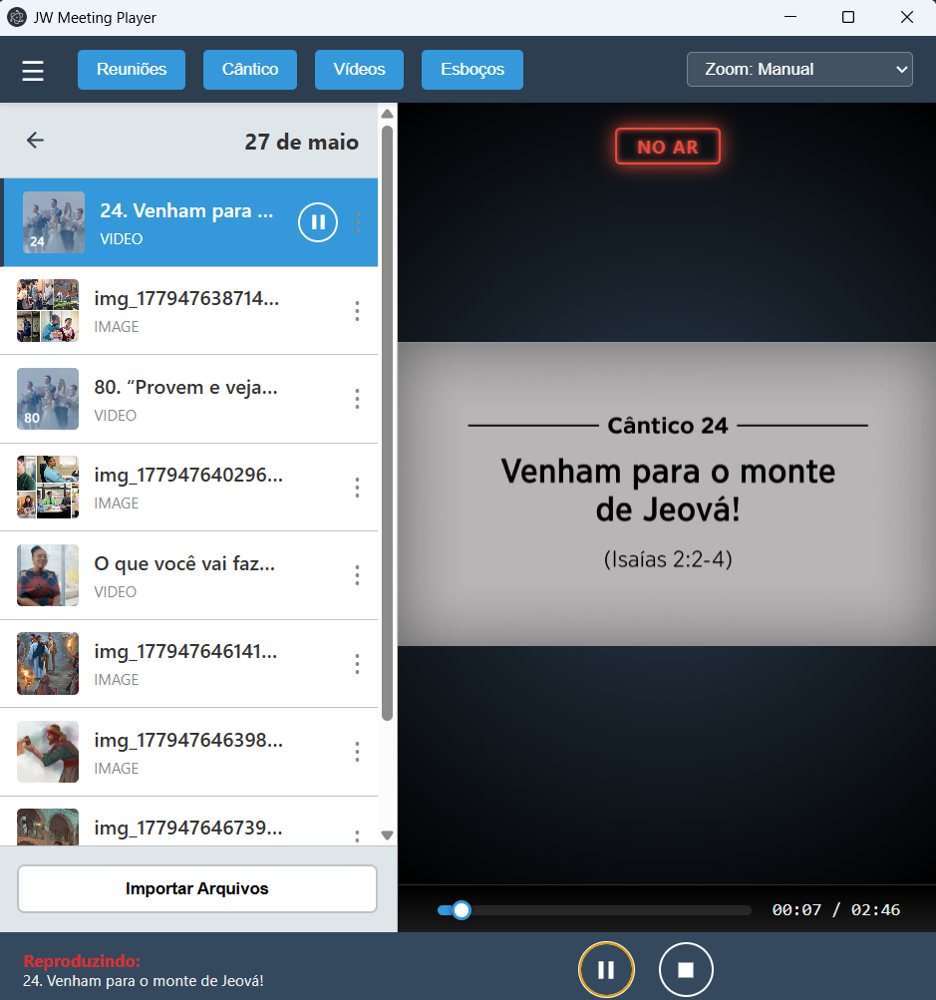

Integração simplificada para suas reuniões
Para apresentações profissionais e sem estresse.

O JW Library é um excelente programa, mas que pode ocasionar contratempos em algumas situações: a exibição de vídeos ou imagens compartilhadas pode desaparecer da tela dos espectadores ou o Windows pode impedir que os arquivos sejam baixados corretamente.
O JW Meeting Player foi criado para resolver essas instabilidades, oferecendo uma alternativa focada na confiabilidade e no fluxo de trabalho contínuo das reuniões.

Centralize tudo o que precisa em um só lugar:
Automação que acelera o fluxo da reunião:

Controle total sobre a apresentação:
Este programa é um projeto pessoal e independente, não afiliado ao JW.org.
Operamos em conformidade com os termos de uso do site JW.org.